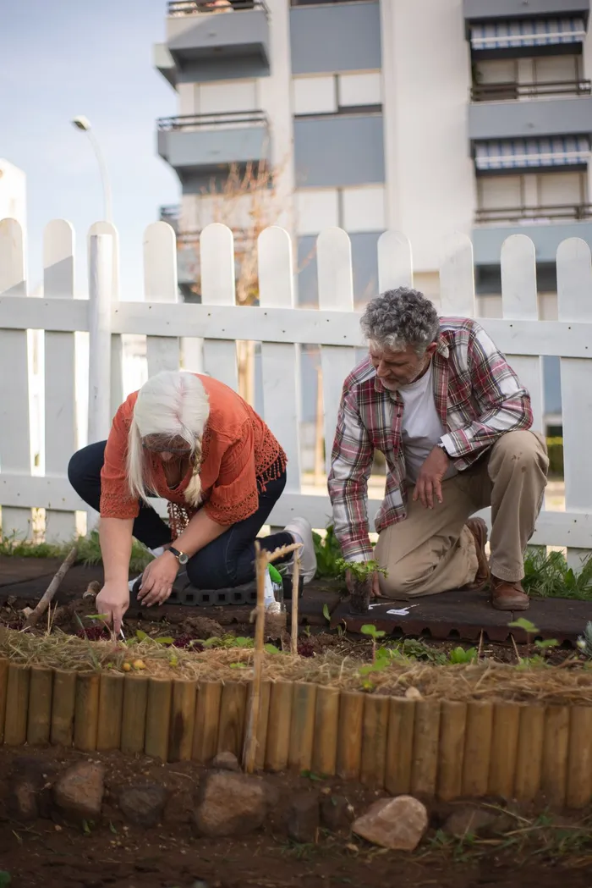
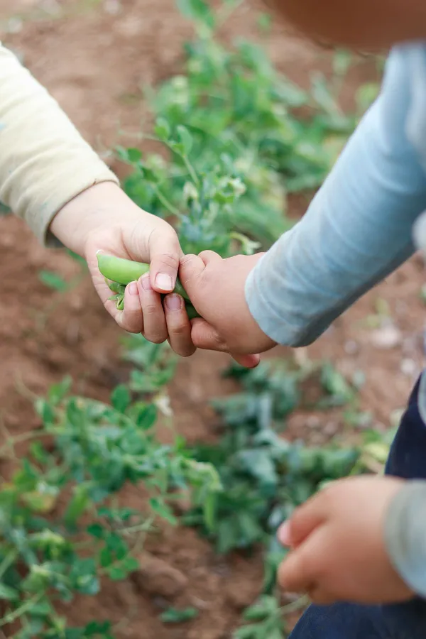
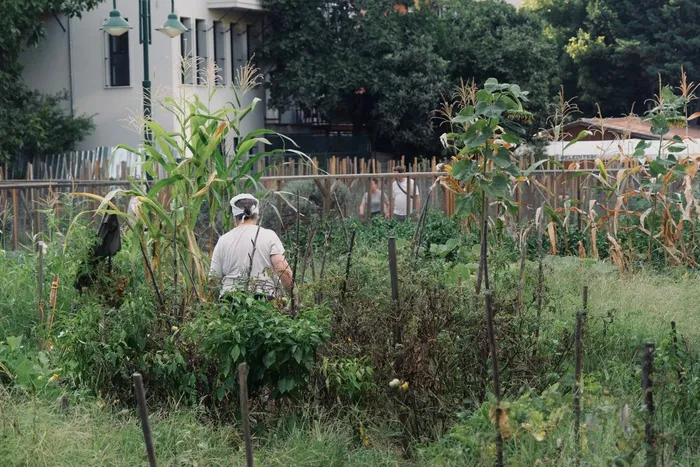
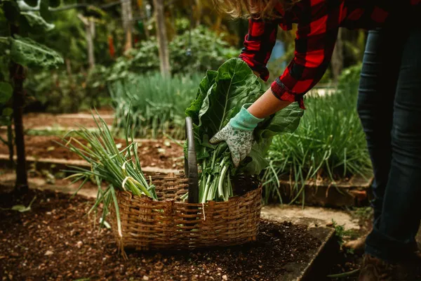

Community farm · Manchester · Since 2014
Growing food, skills and friendship.
Rootwork turns two forgotten acres in Chorlton into a place where neighbours grow, cook and learn together. Everyone is welcome, and the kettle is always on.



12,400 kgof food grown last year

What we do
Four ways to join in


- Neighbours growing each week
- 340
- Meals cooked and shared
- 1,200
- Trainees now in work
- 46
- Years of community growing
- 12
From the farm
Latest stories

Amina and the allotment
Amina arrived at the farm six months ago, new to the city and not sure where to start. Today she runs the Saturday seedling table.
Read the story →
The thousand-tomato summer
A greenhouse, a heatwave and 1,043 tomatoes. How a small team and a lot of volunteers fed half a neighbourhood.
Read the story →
From trainee to head grower
Dev joined the Green Jobs course after ten years in warehouses. This spring he became our first trainee to be hired as a full-time grower.
Read the story →
Support us
A little goes a long way.
Most of our money comes from people like you. A gift of £12 plants twenty seedlings, and a monthly gift lets us plan for the whole year.